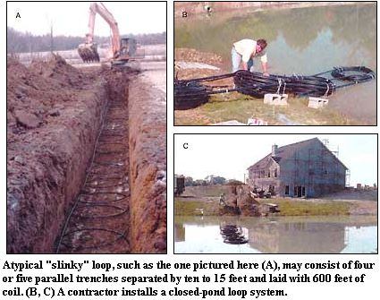
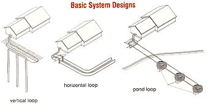
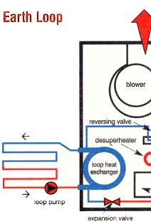
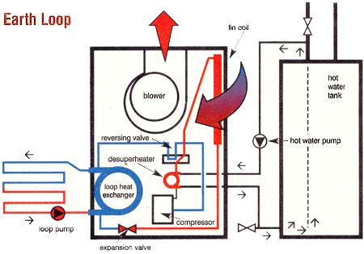
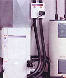
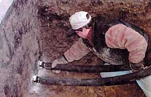
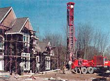

The Big Dig
April/May 2001
by Jeff Persons
A 75% savings on energy bills is
right under your feet.
That said, MOTHER and Jeff Persons, owner of Geo-Source One in Dublin, Ohio, would like to introduce the most energy-efficient and cost-effective way to heat, cool and produce domestic hot water: geothermal energy. This type of power is literally and figuratively a groundbreaking way to reduce your electricity bills by actually using the temperature of the earth to heat and cool your home. Basically, all you need to get started is some polyethylene pipe, a compressor in the basement and a hole in the ground, and you'll save up to 75% on monthly electricity bills! - Sam Martin
EXCHANGING HEAT WITH THE PLANET
One of the most frequent comments we hear from our customers who have switched from conventional heating systems to geothermal is that the system's so quiet they cannot tell if it's operating. Many customers tell me they feel the need to check the thermostat and system in the basement to be certain that everything is still working. (Another thing they often say is, "we only wish we had decided to switch to geothermal long ago.")
Since soil temperatures several feet below the surface remain at a nearly constant 50°F year round, the earth actually acts as a massive low temperature solar storage unit - cooler than surface temperatures in the summer, warmer than the surface in the winter. Geothermal energy, also known as geoexchange, is literally the transfer and storage of heat from the earth.
Similar to your kitchen refrigerator, a residential geoexchange system uses water or a nontoxic refrigerant that circulates through a ground loop where it absorbs heat. A compressor then amplifies this heat to a higher useful temperature before rejecting the heat through a finned heat-exchange coil into the household duct system. This system also allows the cooled refrigerant to flow into an expansion valve so that a "reversing valve" can automatically change the direction of refrigerant flow to provide air conditioning. Many residential systems also incorporate a small auxiliary heat exchanger called a desuperheater to heat the domestic water supply, providing 60% of the normal household hotwater load. In the summer, the hot water is a byproduct of air conditioning and in winter, hot water is made at one-third the cost of operating an electric hot water tank.
While a geoexchange system will not relieve you completely of dependence on grid power, it will dramatically reduce the amount of electricity you need from your local utility without sacrificing comfort. Indeed, this type of system can provide heat up to 100°F and air conditioning down to 45°F. In summer months, if the compressor in your basement has to work only to reject heat to the cool earth rather than the much hotter outdoor temperatures, it can provide two to three times as many cooling BTUs per watt of power consumed. That equals a savings of 50% to 66% in cooling cost and a dramatically reduced electrical load for the utility.
Moreover, since the Earth provides 75% of the heating and cooling energy, analysts are discovering that noise and thermal pollution from outdoor units is minimal. Electrical generation, transmission loads and power plant emissions can be reduced by 400% per household. All around, geothermal energy is a win-win option for the environment, utility companies and the homeowners.
THE BIRTH OF GEOTHERMAL
The idea for geothermal heating and cooling dates back to the early 1940s when watercooled heat pumps and air conditioners first evolved. Engineers and technicians realized that water had a high rate of heat transfer that allowed for smaller heat exchangers and minimal refrigerant charges. From the 1940's to the 1970s, however, energy was cheap, and not everyone had access to large volumes of clean water or a place to discharge it. Consequently, most of the early watercooled systems were used in commercial structures where well water or process water was in continually available. Meanwhile, the notably less efficient air-source systems enjoyed a major market growth due to their ease of installation.
These days, geothermal energy has become a major industry, used in the creation of schools, hospitals, churches, military bases, public housing and high-rise office towers. Virtually every sector of the market with concern for operating costs has come to recognize that energy expense is significantly less with geothermal than with conventional heating and cooling methods. In many instances, public buildings are reaping return on the initial investment in as little as four to five years.
LOOP TO LOOP
There are two primary types of geothermal systems: open-loop and closed-loop. Open loop systems operate from well water and require space for water discharge. Closed-loop methods, however, circulate water and antifreeze through a series of buried polyethylene pipes. The closed loop varieties include pond loops, horizontal trench loops and vertical loops.
OPEN-LOOP SYSTEMS
The open-loop variety requires a source of feed water, such as a well. They are less expensive to install, but may cost more to maintain if your water supply is unreliable. At Geo-Source, a typical open-loop system ranges in cost from $8,200 for the best 2.5-ton system to $11,400 for a two-speed, 6-ton unit. That includes interior plumbing materials, complete installation and a ten-year warranty.
While the majority of rural wells can be used with a geothermal system, there are exceptions. One problem can be the presence of iron bacteria in your water. Though not fit for human consumption, they will cause a troublesome buildup of iron deposits inside plumbing. If your water source contains iron bacteria, you might want to consider a closed-loop system.
If you're considering an open-loop system, make sure your water supply or well can meet the following guidelines. (Note: More specific questions regarding the chemical content of nonpotable water and its suitability for use are best directed to an equipment manufacturer.)
• Untreated water must be potable (no brackish or rotten egg odors).
• The water table should be within 100 feet of the surface.
• The volume of available water should be equal to twice the peak household use.
• Wells drilled into shallow bedrock and specifically into karst (cavernous limestone) formations function best if the casing can extend below the pumping water level. (Shallow water is easily contaminated.)
• Wells drilled into sand and gravel formations function best if a well screen is installed. (Well screens dramatically increase the capacity of a well and assure a longer lasting and more reliable water supply.
• Lastly, always avoid the use of galvanized pipe fittings and steel pipe with any water system. Galvanized steel is easily corroded by electrolysis and will fail within a few years.
Closed-loop systems are clean, very low-maintenance and usually carry a loop materials warranty of 25 to 55 years.
CLOSED-LOOP SYSTEMS
The good thing about closed loop geoexchange systems is that they can be installed almost anywhere. The loop is filled once with clean water and nontoxic antifreeze, and a small pump recirculates the antifreeze solution between the loop and the exchange system. Closed loop systems remain clean, are very low on maintenance and usually carry a loop materials' warranty of 25 to 55 years. The three types of closed-loop systems are pond, horizontal and vertical.
Pond Loops For a six-ton geothermal system a pond loop typically requires a pond size of at least half an acre and a minimum depth of eight feet. Smaller ponds may experience thermal fluctuations from the geoexchange system, which can be stressful to aquatic life. In central Ohio, we find our larger ponds typically run temperatures of 70°F at eight feet in the summer, and 38°F in the winter.
Pond loops are typically the lowest costing design of closed loop heat exchanger. The average cost per ton of capacity runs $500 to $600 for materials, antifreeze and labor. A complete installation of equipment, a 10-year warranty and a loop attached to existing ductwork costs from $10,400 for a 2.5-ton unit to $15,300 for a two-speed, six-ton size unit. To make trenching to a pond practical, the pond should be at a lower elevation than the home and no more than 300 feet away. Soil conditions should allow for trenching without encountering bedrock or difficult terrain.
Pond loops are typically constructed from 300-foot rolls of 0.75-inch polyethylene pipe that carry SDR11 rating. The rolls are prepared with spacers between each layer of pipe - once all spacers are in place and the rolls are banded tightly, the spacers are attached to a manifold constructed from one-inch SCH 40 polyethylene pipe. This manifold uses a connection method called "reverse return", in which the first circuit on the supply line is connected as the last circuit on the return side. This requires more manifold pipe but assures that each parallel circuit of pipe on the manifold receives equal flow.
Horizontal Loops Horizontal loops typically require two or more acres of unrestricted open area for installation and the cost of a horizontal loop will vary according to the loop design and the local site conditions. Typical costs range from $600 to a little more than $1,000 per ton of loop capacity. Complete systems with ten-year warranties, installed with loops and attached to existing duct work range in price from $11,700 for a 2.5-ton system to $18,500 for a six-ton, two-speed system.
The simplest horizontal loop is a single pipe loop constructed from 1.25-inch polyethylene pipe. Single pipe loops of up to 1,600 feet may be constructed and placed in the bottom of a simple out and back trench dug to three to five feet. Typically, the deeper the pipe is placed, the more stable the soil temperature will be. The length of pipe required for horizontal loops ranges from just under 750 feet per ton for light dry soil to as little as 350 feet per ton for heavy, saturated soil.
More involved horizontal loops may assume any number of configurations depending on lot and soil conditions. In addition to the single-pipe trench, there are two-, three-, four- and six-pipe trenches. As the number of pipes in a trench increases, of course, so does the width, which allows geoexchange contractors to lay extended-pipe loops in what is known as "slinky" loops.
A typical slinky-loop field may consist of four or five parallel trenches separated by ten to 15 feet and laid with 600 feet of coil. with an experienced crew of four - track-hoe operator, safety-man and two loop installers - the average work time to install a slinky loop is about an hour and 20 minutes per ton of coil. After all costs are accounted for, slinky loop installation averages $800 per ton.
Vertical Loops
For small lots and locations with little acreage, vertical loops are an economical alternative. They require the use of a drilling rig to bore a four-inch diameter hole for the heat exchanger piping. Depending on soil and rock conditions, the depth of a vertical loop bore can range 130 to 245 feet per ton of equipment capacity. Drilling costs, with manifold connections and antifreeze fill, average $1,500 to $1,800 per ton. Local drilling costs vary, so vertical loops can range from $12,600 for a 2.5-ton system to as much as $21,870 for a six-ton, two-speed system with a ten-year equipment warranty.
When possible, vertical wells are separated by 15 feet to avoid thermal interference between wells. The closed-loop heat exchanger is constructed from two parallel lengths of 0.75-inch polyethylene pipe, and a "U" bend is welded to the bottom end to connect the supply and return side of the exchanger. Once the exchanger is assembled, it is pressure-tested and a ten-foot section of re-bar is taped to it to keep the lead section straight. Next, a grout line is loosely attached and the exchanger is filled with water to prevent it from floating back out of the well if the well begins to fill with water. Once inserted into the well, the bore is grouted up with a bentonite clay slurry and the grout pipe is removed for reuse on the next well. The bentonite grout serves two functions: to seal the well and prevent contamination from surface sources, and to provide a medium for heat transfer between the exchanger tubing and the side wall of the well bore.
Related info:
Geothermal Checklist
 A hot water unit and pump (above). Coring a path into the house. A 2"" hole is drilled through the foundation. A 2"" PVC sleeve is inserted and watersealed. |
|
 |
|
 |
 |
 |
|
 |
 |
 |